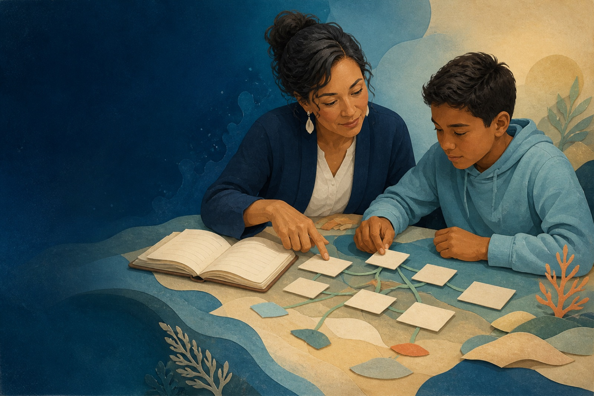

I’m concerned about a child’s reading or spelling
Learn about dyslexia, signs to notice, school conversations, screening, evaluation, and ways to support access.
Explore family next steps →Lokahi Connect helps students, families, and educators investigate how English spelling reflects meaning, structure, and history, so words become more coherent and more learnable.

Choose the pathway that best fits your question. Each one leads to practical information without asking you to know the right terminology first.
Learn about dyslexia, signs to notice, school conversations, screening, evaluation, and ways to support access.
Explore family next steps →Explore educator learning, Structured Literacy, and flexible word-investigation routines grounded in evidence.
Explore educator learning →Find carefully selected national, Washington, Hawaiʻi, and Maui resources, plus ways to share local needs.
Explore community resources →Letter-sound instruction matters, but it does not explain everything students need to know about how words work. Learners also need meaning, structure, grapheme function, and transfer.
Many students can repeat a pattern they were taught, then lose the pattern when the next word changes shape or meaning.
When spelling is presented as rules, exceptions, and “just remember it” words, learners are left without a coherent model.
Without visible word structure, students may decode one word correctly yet struggle to reason through related words, academic vocabulary, and spelling decisions.
Written language preserves relationships among meaning, morphology, grammar, spelling, history, and context. No single dimension is the sole organizing principle. Learners can enter through any of the Four Questions and move among them as the word, context, observation, and purpose require.
What does the word mean in this construction and context?
How is the word built from a base and any affixes?
Which words share a meaningful structural relationship?
How do the graphemes function in this word and family, including pronunciation evidence where relevant?
We use inquiry routines such as word sums, matrices, and family investigations to make structure visible and discussable.
Peter N. Bowers is the intellectual source of SWI and the Four Questions. Bowers and Kirby (2010) introduced the term Structured Word Inquiry in a Grade 4/5 morphological vocabulary intervention.
We design for cognitive variability by reducing unnecessary load, keeping routines predictable, and preserving linguistic accuracy.
Adults guide attention, meaning, reciprocity, and transfer so students build durable reasoning, not just short-term compliance.
We look at student work, word investigation transfer, standardized assessments where appropriate, and educator implementation evidence. When we share case stories, we do so in de-identified form and with enough context to make the evidence interpretable.
Your gift helps develop student learning resources, educator learning, and open-access tools.
May support student learning materials and open resources.
May support educator learning, coaching, or curriculum development.
May support partnership planning, implementation design, or long-range growth.